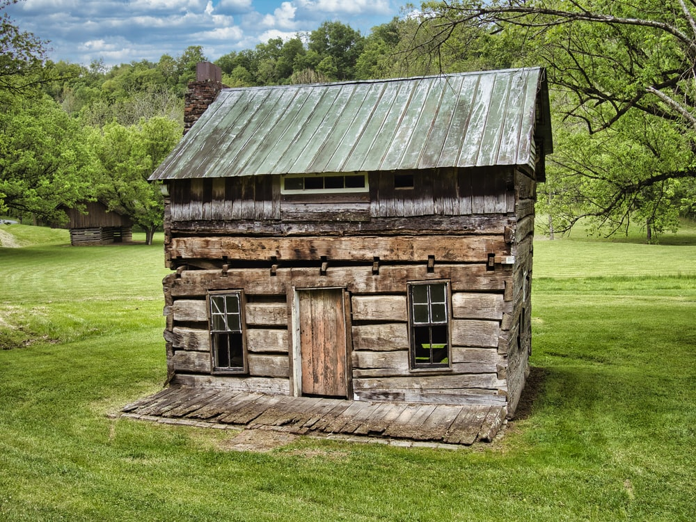
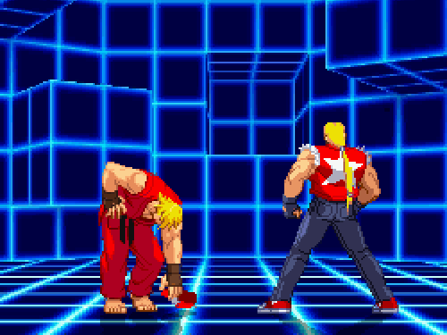

Un párrafo con un
imagen flotante. Un párrafo con una imagen flotante flotante. Un párrafo con una imagen flotante.
Un párrafo con un
imagen flotante. Un párrafo con una imagen flotante flotante. Un párrafo con una imagen flotante.En HTML las imagenes estan definidas con la etiqueta - img -
La etiqueta - img - esta vacia, esta solo continene atributos, y no tiene etiqueta de cierre.
El atributo SRC especifica la URL (direccion web) de la imagen:
img src="url"
El atributo alt provee un texto alternativo a la imagen, si el usuario por alguna razon no pude verla (debido a conexion lenta, un error en el atributo src,o si el usuario usa un lector de pantalla).
El valor del atributo alt deberia describir la imagen:
Si un navegador no pude encontrar la imagen, mostrará el texto alternativo:
Puedes usar el atributo style para especificar la anchura y altura de la imagen.

Alternativamente, puedes usar los atributos de ancho y alto:
ambos ancho y alto, y atributo el atributo style son validos en HTML5.
Sin embargo, sugerimos usar el atributo style. Evita que las hojas de estilos cambien el tamaño de las imágenes.:
< style >
img {
width:100%;
}
< /style >
La imagen a continuación tiene el atributo de ancho establecido en 128 píxeles, pero la hoja de estilo lo anula y establece el ancho en 100%.
La imagen a continuación usa el atributo de estilo, donde el ancho se establece en 128 píxeles, lo que anula la hoja de estilo:
Si no se especifica, el navegador espera encontrar la imagen en la misma carpeta que la página web.
Sin embargo, es común almacenar imágenes en una subcarpeta. Luego debe incluir el nombre de la carpeta en el src atributo:
Algunos sitios web almacenan sus imágenes en servidores de imágenes..
De hecho, puede acceder a las imágenes desde cualquier dirección web del mundo:

HTML permite GIF animados:

Para usar una imagen como vínculo, coloque la etiqueta <img> dentro de la etiqueta <a>:
Utilice la propiedad flotante de CSS para dejar que la imagen flote a la derecha oa la izquierda de un texto:
Flota la imagen a la derecha:
Un párrafo con un
imagen flotante. Un párrafo con una imagen flotante flotante. Un párrafo con una imagen flotante.
Flota la imagen a la izquierda:
Un párrafo con una imagen flotante. Un párrafo con una imagen flotante. Un párrafo con una imagen flotante.
Utilice la propiedad flotante de CSS. El atributo de alineación está obsoleto en HTML 4 y no es compatible con HTML5.
Un párrafo con una imagen flotante. Un párrafo con una imagen flotante. Un párrafo con una imagen flotante..
Utilice la propiedad flotante de CSS. El atributo de alineación está obsoleto en HTML 4 y no es compatible con HTML5.
Usa la etiqueta <map> para definir un mapa de imágenes. Un mapa de imagen es una imagen con áreas en las que se puede hacer clic.
En la imagen a continuación, haga clic en la computadora, el teléfono o la taza de café:
Haga clic en la computadora, el teléfono o la taza de café para ir a una nueva página y leer más sobre el tema:
Para agregar una imagen de fondo en un elemento HTML, use la propiedad CSS background-image:
<body style="background-image:url('img48.jpg');">